目录基础
回忆
- 我们熟悉了基本软件包的使用
- 本地的dpkg
- 远程的apt
- 安装、卸载、搜索、查看
- 了解了 gui 和 cli 的关系

- 体会到命令行才是根本！!!
- 后面讲什么呢？🤔
进入用户文件夹
ls
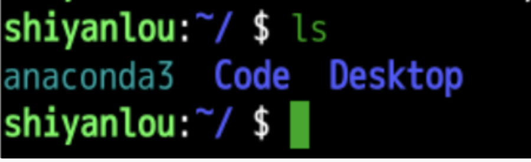
- 原本三个文件夹
- 建立起一个year文件夹
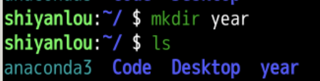
- 现在有4个文件夹了
- 什么是mkdir呢？
灵魂三问
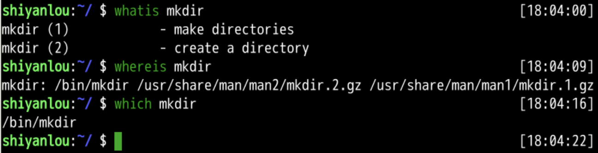
- 帮助手册怎么说的呢？
查询帮助手册
- man可以查询到详细帮助
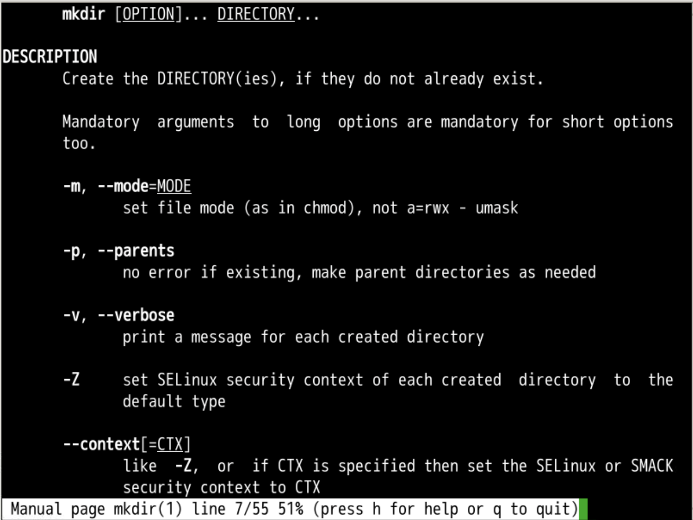
- 建立文件夹之后呢？
春有百花秋有月
夏有凉风冬有雪
若无闲事挂心头
便是人间好时节
- 《颂平常心是道》 【宋代】慧开禅师
继续建立
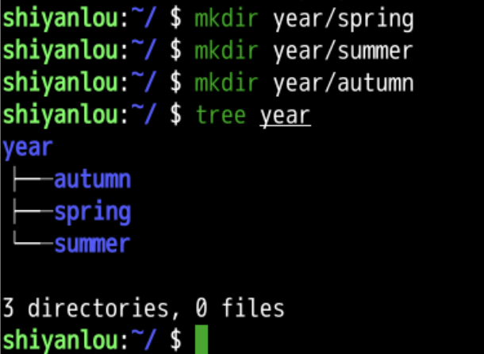
- 在year中建立春夏秋三个子文件夹
继续建立
- 在季节文件夹下建立月份文件夹
- 使用{1..5}
- 可以建立1-5总共5个文件夹
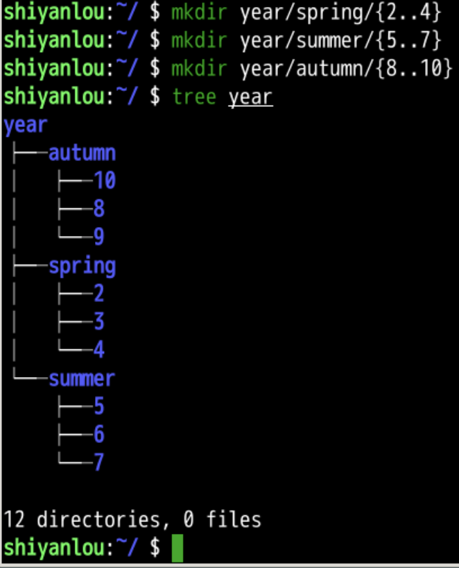
- 想要建立冬三月
连带父级一起建立
- 使用参数-p
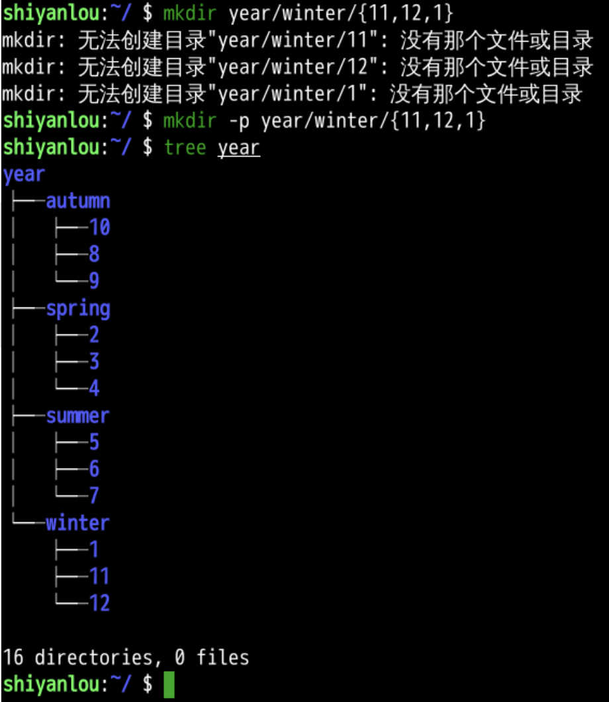
- 如果父级不存在
- 就先建立父级
- 可以用更简单的写法么？
md
- md 其实就是 mkdir -p的省略写法
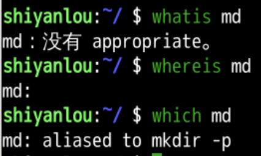
- 如果已经有了文件或者文件夹叫做这个名字了呢？
重复
- 如果已经有了这个名字的文件或文件夹
- 就不能重复
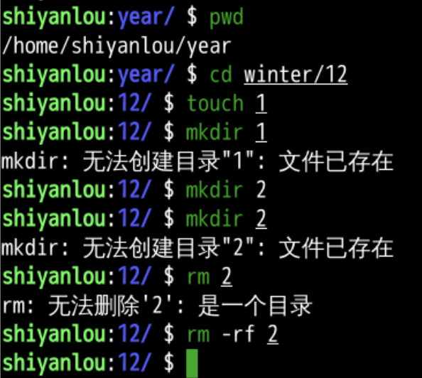
- 为什么mkdir能判断是否重复？
- 为什么mkdir能递归地建立多层的父级呢？
- 去看看mkdir源代码
- 源代码在哪呢？
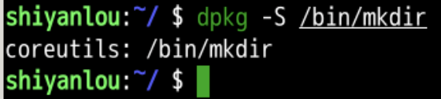
- 好像和yes是一个包里面的
查询包详情
- 这个是由debian做的
- 然后ubuntu作为debian下游
- 用的是debian
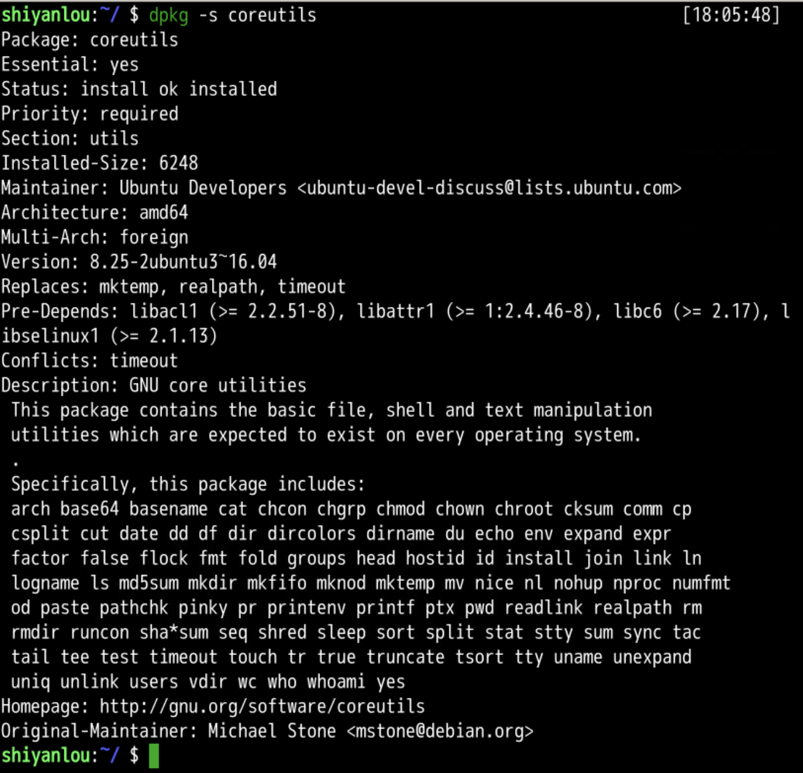
- 这里面有很多我们的老朋友
- echo
- ls
- cp
- pwd
- 这个包太有用了
下载源文件
sudo vi /etc/apt/sources.list
sudo apt update
sudo apt source coreutils
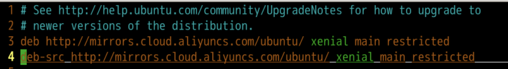
找到源文件
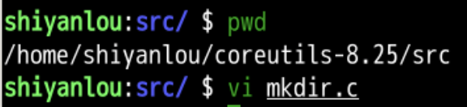
- 可以找到
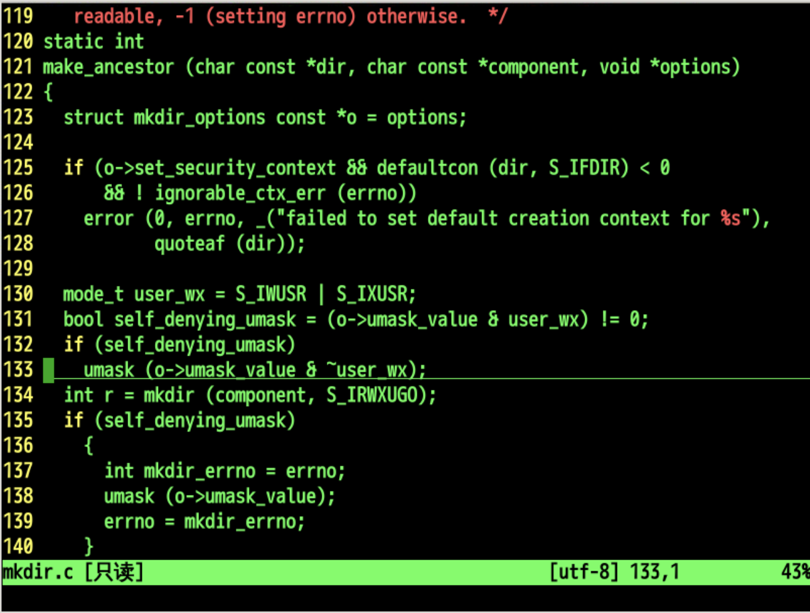
- 可以看到一些细节
- 我们去总结一下
总结
- 我们这次研究了新建文件夹
- mkdir
- make directory
- 可以加-p自动添加子文件夹
- 可以在建文件夹的时候是用缩略形式
- {1,2,4}
- {1..4}
- 建了文件夹就像建了可以装文件的容器

- 我们可以在各种文件夹之间跳跃么？🤔
- 下次再说👋